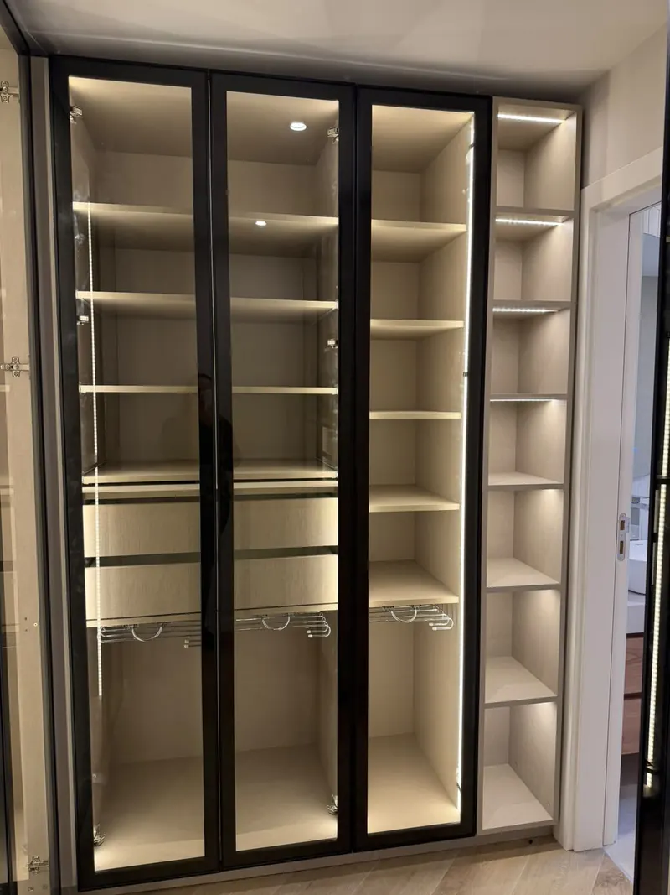
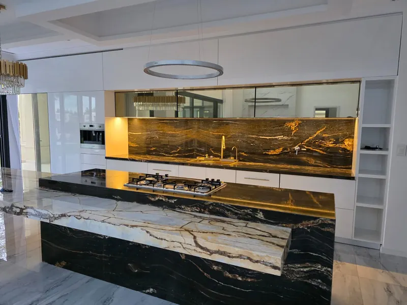
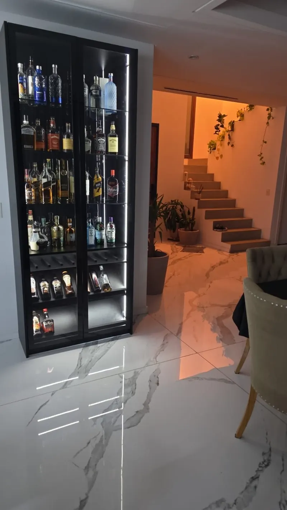
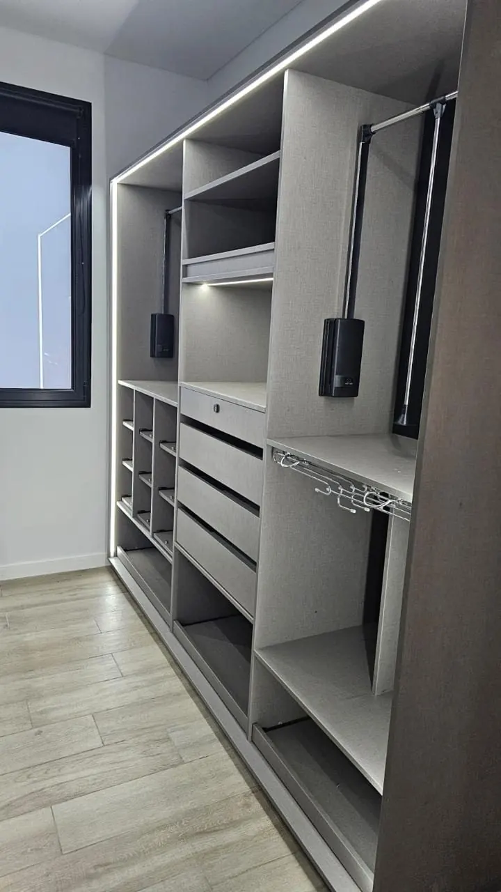
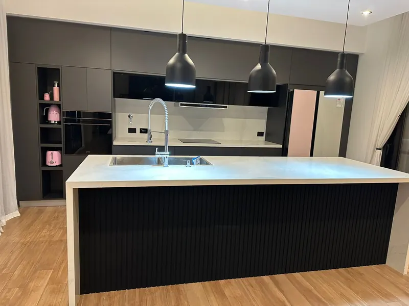
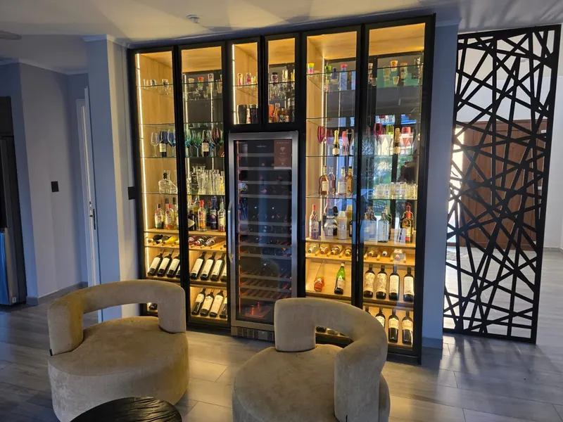
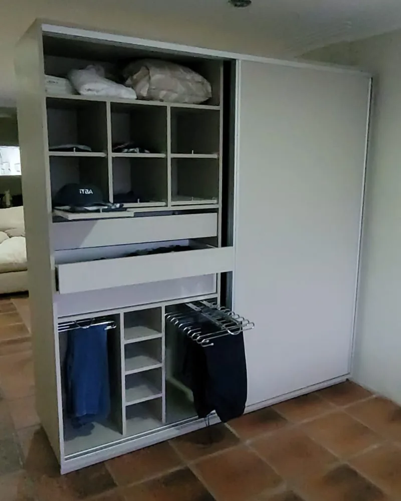
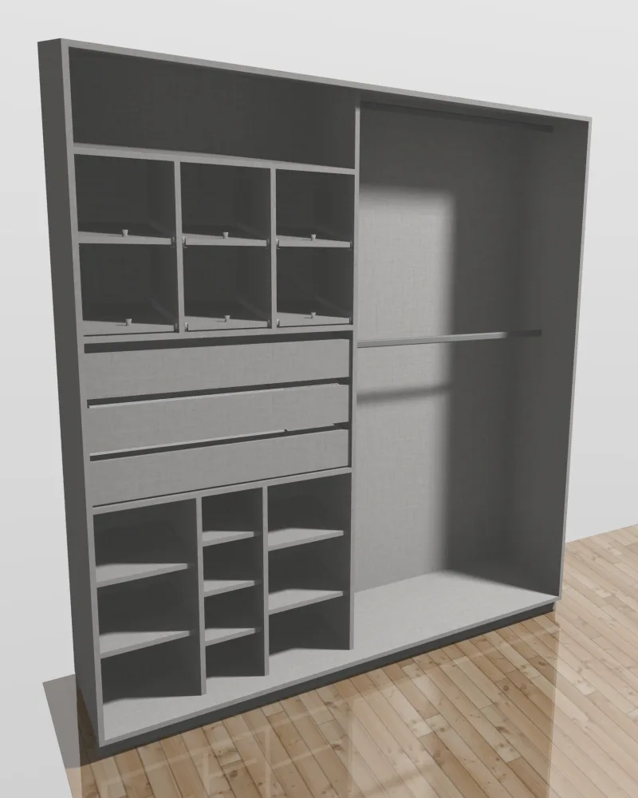

Cocinas · Vestidores · Placares · Cristaleros
Diseñado a medida.
Iluminado al detalle.
Muebles de alta gama con tecnología CNC y luz integrada. Lo ves en 3D antes de que exista.
01
La luz como esencia
Iluminación integrada en estantes, puertas y cajones, con sensores y encendido a distancia.
02
Lo ves antes de que exista
Cada proyecto se diseña y se recorre en 3D antes de fabricarse.
03
Precisión CNC
Mecanizado de seis caras y diseños calados propios: terminaciones exactas, sin margen de error.
04
Oficio de familia
Más de 20 años de carpintería. Lo que más nos elogian es la prolijidad.
La luz como esencia
Un mueble cambia cuando se enciende.
Iluminación integrada en estantes, puertas y cajones.

Proyectos
Cada pieza, única.





Líneas
Tres niveles. Un mismo estándar.
Cocinas, placares y vestidores en tres líneas. Te mostramos la diferencia en persona.
Classic
Lo esencial, bien hecho.
- Melamina en colores clásicos
- Herrajes de línea
- Diseño a medida
Recomendada
Premium
Cierre suave y luz.
- Frentes texturados
- Herrajes de buena calidad con cierre suave
- Iluminación LED bajo alacena
Experiencia completa
Elite
Todo, sin concesiones.
- Frentes Rauvisio o laqueados
- Herrajes Blum con apertura push
- Luz integrada en cada puerta y cajón
- Cristaleros de aluminio negro y vidrio fumé
Cómo trabajamos
De la idea al mueble encendido.
-
Paso 1
Escuchamos
Nos contás cómo soñás tu espacio y nos involucramos como si fuera para nosotros.
-
Paso 2
Diseñamos en 3D
Ves tu mueble con materiales y luz antes de fabricarlo.
-
Paso 3
Fabricamos
En nuestro taller, con tecnología de punta: corte y mecanizado CNC de precisión.
-
Paso 4
Instalamos
Nuestro equipo lo coloca y lo deja funcionando.
Diseño 3D
Lo ves antes de que exista.
El mismo mueble: a la izquierda el diseño, a la derecha terminado.


Nosotros
Una historia construida en familia.
Empezamos hace más de 20 años como un taller de carpintería. Hoy trabajamos con maquinaria de punta, sin perder lo que nos trajo hasta acá: el cuidado de cada detalle y el trato cercano.
Cada mueble lleva nuestra firma.
Contacto
Contanos qué tenés en mente.
Te respondemos por WhatsApp y coordinamos para mostrarte opciones.
CABA · Canning · Ezeiza · Zona sur y alrededores